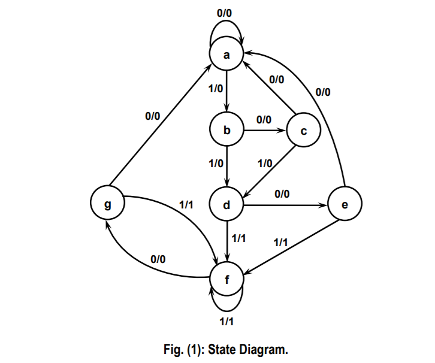
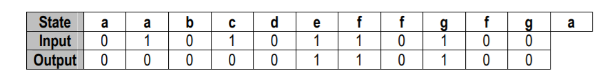
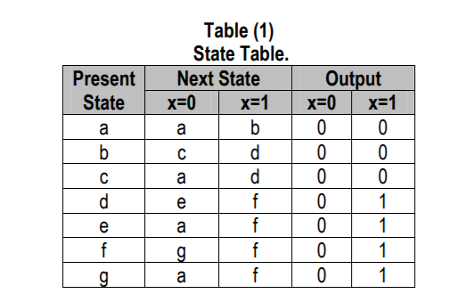
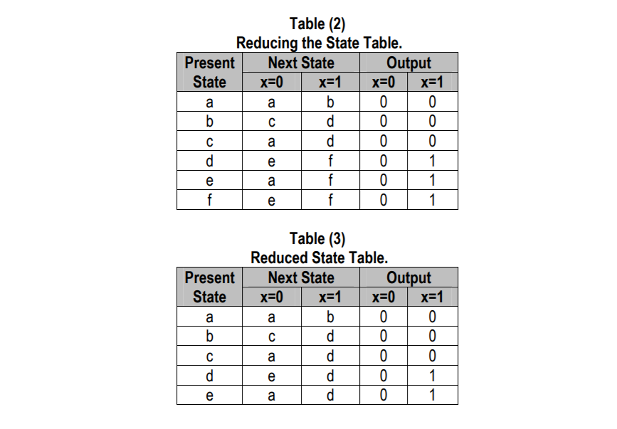
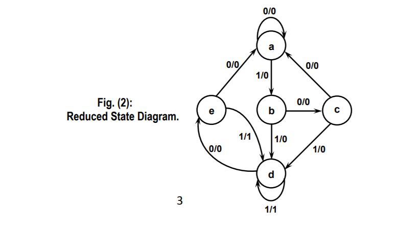
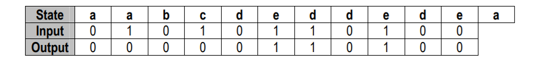
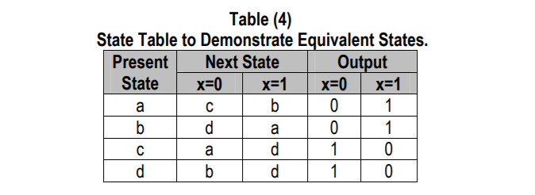
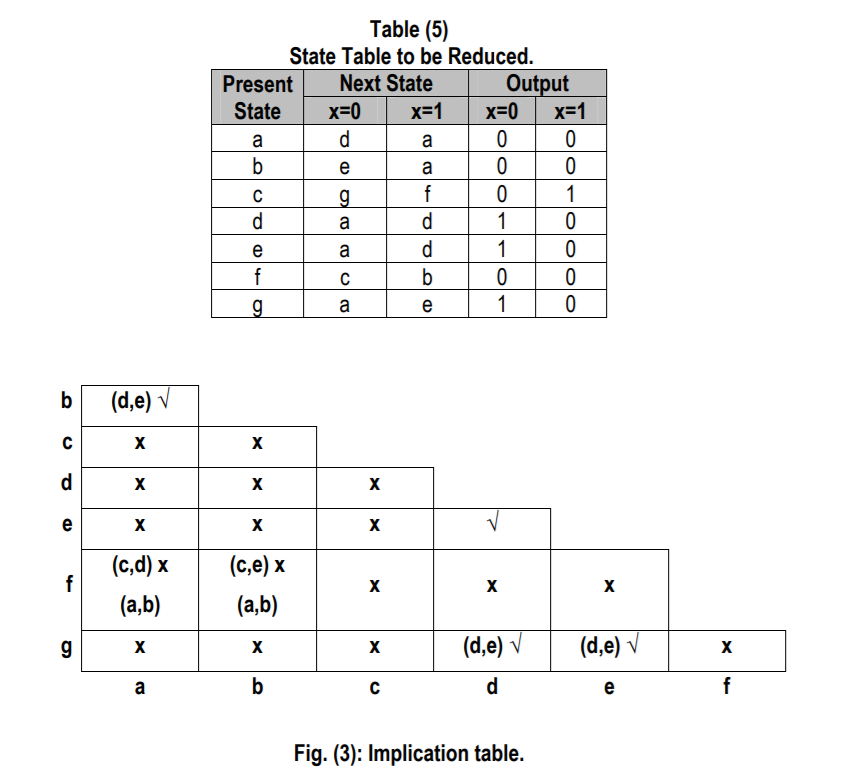
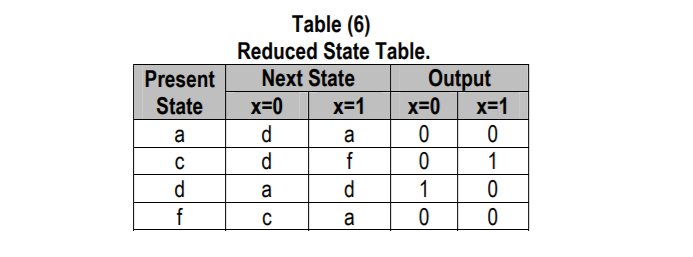

State Reduction:
The reduction of the number of flip-flops in a sequential circuit is referred to as the state reduction problem. State-reduction algorithms are concerned with procedures for reducing the number of states in a state table, while keeping the external input-output requirements unchanged. Since (N) flip-flops produce (2N) states, a reduction in the number of states may (or may not) result in a reduction in the number of flip-flops. An unpredictable effect in reducing the number of flip-flops is that sometimes the equivalent circuit (with fewer flip-flops) may require more combinational gates. We will illustrate the state reduction procedure with an example. We start with a sequential circuit whose specification is given in the state diagram shown in Fig. (1). In this example, only the input-output sequences are important; the internal states are used merely to provide the required sequences. For this reason, the states marked inside the circles are denoted by letter symbols instead of their binary values. This is in constant to a binary counter, where the binary value sequence of the state themselves is taken as the outputs.
There are an infinite number of input sequences that may be applied to the circuit; each results in a unique output sequence. As an example, consider the input sequence [01010110100] starting from the initial state (a). Each input of 0 or 1 produces an output of 0 or 1 and causes the circuit to go to the next state. the output and state sequence for the given input sequence as follows: With the circuit in initial state (a), an input of 0 produces an output of 0 and the circuit remains in state (a). With present state (a) and input of 1, the output is 0 and the next state is (b). With present state (b) and input of 0, the output is 0 and next state is (c). Continuing this process, we find the complete sequence to be as follows:

In each column, we have the present state, input value, and output value. The next state is written on top of the next column. It is important to realize that in this circuit, the states themselves are of secondary importance because we are interested only in output sequences caused by input sequences. Now let us assume that we have found a sequential circuit whose state diagram has less than seven states and we wish to compare it with the circuit whose state diagram is given by Fig. (1). If identical input sequences are applied to the two circuits and identical outputs occur for all input sequences, then the two circuits are said to be equivalent (as far as the input-output is concerned) and one may be replaced by the other. The problem of state reduction is to find ways of reducing the number of states in a sequential circuit without altering the input-output relationships. We now proceed to reduce the number of states for this example. First, we need the state table; it is more convenient to apply procedures for state reduction using a table rather than a diagram. The state table of the circuit is listed in Table (1) and is obtained directly from the state diagram.

An algorithm for the state reduction of a completely specified state table is given here without proof:"Two states are said to be equivalent if, for each member of the set of inputs, they give exactly the same output and send the circuit either to the same state or to an equivalent state." When two states are equivalent, one of them can be removed without altering the input-output relationships.Now apply this algorithm to Table (1). Going through the state table, we look for two present states that go to the same next state and have the same output for both input combinations. States (g) and (e) are two such states: they both go to states (a & se) are equivalent and one of these states can be removed. The procedure of removing a state and replacing it by its equivalent is demonstrated in Table (2). The row with present state (g) is removed and state (g) is replaced by state (e) each time it occurs in the next-state columns.


Present state (f) now has next states (e and f) and outputs 0 and 1 for x=0 and x=1, respectively. The same next states and outputs appear in the row with present (d). Therefore, states (f and d) are equivalent and state (f) can be removed and replaced by (d). The final reduced table is shown in Table (3). The state diagram for the reduced table consists of only five states and is shown in Fig. (2). This state diagram satisfies the original input-output specifications and will produce the required output sequence for any given input sequence. The following list derived from the state diagram of Fig. (2) is for the input sequence used previously (note that the same output sequence results, although the state sequence is different):

In fact, this sequence is exactly the same as that obtained for Fig. (1), if we replace (g by e and f by d). Checking each pair of states for possible equivalency can be done systematically by means of a procedure that employs an implication table. The implication table consists of squares, one for every suspected pair of possible equivalent states. By judicious use of the table, it is possible to determine all pairs of equivalent states in a state table. The use of the implication table for reducing the number of states in a state table is demonstrated in the next section. The sequential circuit of this example was reduced from seven to five state. In general, reducing the number of states in a state table may result in a circuit with less equipment. However, the fact that a state table has been reduced to fewer state doesn't guarantee a saving in the number of flip-flops or the number of gates.
Implication Table
The state-reduction procedure for completely specified state tables is based on the algorithm that two states in a state table can be combined into one if they can be shown to be equivalent. Two states are equivalent if for each possible input, they give exactly the same output and go to the same next states or to equivalent next state. Consider for example, the state table shown in Table (4). The present states (a) and (b) have the same output for the same input. Their next states are (c and d) for x=0 and (b and a) for x=1. If we can show that the pair of states (c, d) are equivalent, then the pair of states (a, b) will also be equivalent because they will have the same or equivalent next states. When this relationship exists, we say that (a, b) imply (c, d). Similarly, from the last two rows of Table (4), we find that the pair of states (c, d) imply the pair of states (a, b). The characteristic of equivalent states is that if (a, b) imply (c, d) and (c, d) imply (a, b), then both pairs of states are equivalent; that is, (a and b) are equivalent as well as (c and d). As a consequence, the four rows of Table (4) can be reduced to two rows by combining (a and b) into one state and (c and d) into a second state. The checking of each pair of states for possible equivalence in a table with a large number of states can be done systematically by means of an implication table. The implication table is a chart that consists of squares, one for every possible pair of states, that provide spaces for listing any possible implied states. By judicious use of the table, it is possible to determine all pairs of equivalent states. The state table of Table (5) will be used to illustrate this procedure. The implication table is shown in Fig. (3). On the left side along the vertical are listed all the states defined in the state table except the first, and across the bottom horizontally are listed all the states expect the last. The result is a display of all possible combinations of two states with a square placed in the intersection of a row and a column where the two states can be tested for equivalence. Two states that are not equivalent are marked with a cross (x) in the corresponding square, whereas their equivalence recorded with a check mark (√). Some of the squares have entries of implied states that must be further investigated to determine whether they are equivalent or not. The step-by-step procedure of filling in the squares is as follows. First, we place a cross in any square corresponding to a pair of states whose outputs are not equal for every input. In this case, state (c) has a different output than any other state, so a cross is placed in the two squares of row (c) and the four squares of column (c). There are nine other squares in this category in the implication table.
Next, we enter in the remaining squares the pairs of states that are implied by the pair of states representing the squares. We do that starting from the top square in the left column and going down and then proceeding with the next column to the right. From the state table, we see that pair (a,b) imply (d,e), so (d,e) is recorded in the square defined by column (a and row b). We proceed in this manner until the entire table is completed. Note that states (d,e) are equivalent because they go to the same next state and have the some output. Therefore, a check mark is recorded in the square defined by column (d and row e), indicating that the two states are equivalent and independent of any implied pair. The next step is to make successive passes through the table to determine whether any additional squares should be marked with a cross. A square in the table is crossed out if it contains at least one implied pair that is not equivalent. For example, the square defined by (a) and (f) is marked with a cross next to (c,d) because the pair (c,d) defines a square that contains a cross. This procedure is repeated until no additional squares can be crossed out. Finally, all the squares that have no crosses are recorded with check marks. These squares define pairs of equivalent states. In this example, the equivalent states are: (a,b) (d,e) (d,g) (e,g)

We now combine pairs of states into larger groups of equivalent states. The last three pairs can be combined into a set of three equivalent states (d,e,g) because each one of the states in the group is equivalent to the other two. The final partition of the states consists of the equivalent states found from the implication table, together with all the remaining states in the state table that are not equivalent to any other state. (a,b) (c) (d,e,g) (f) This means that Table (5) can be reduced from seven states to four states, one for each member of the above partition. The reduced table is obtained by replacing state (b by a and states e and g by d).
